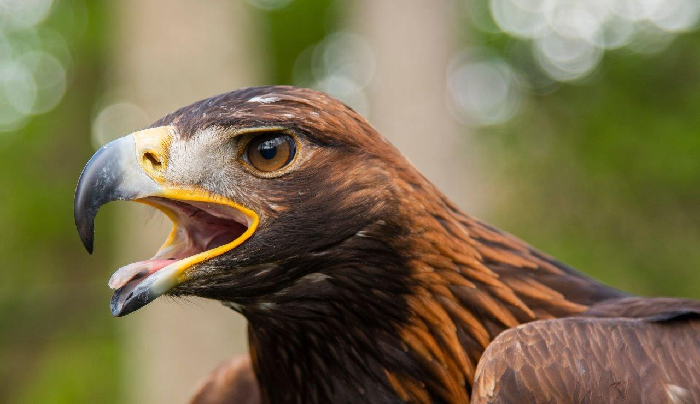
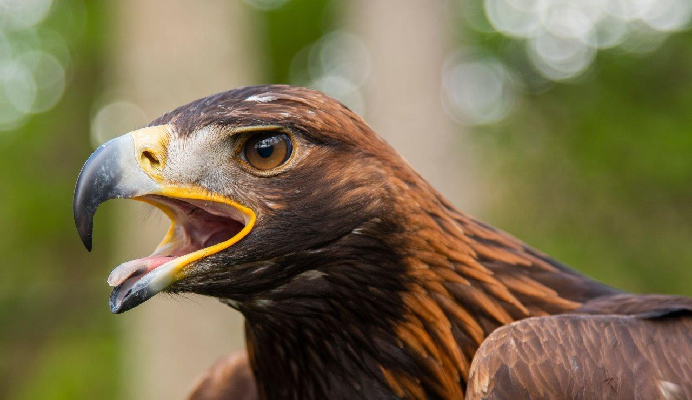

The golden eagle is dark brown with golden-brown feathers on the back of its head and neck, which explains how it got its name. ... Unlike the bald eagle, this raptor's legs are completely covered in feathers up to its feet, which have sharp talons.
Golden Eagles are not big talkers. Their occasional calls tend to be high, weak, and whistled. You're most likely to hear these birds during breeding season, when nestlings' high-pitched begging calls can travel a mile or more, and adults announce food deliveries with a wip or a wonk.
These majestic birds range from Mexico through much of western North America as far north as Alaska. They also appear in the east but are uncommon. Golden eagles are also found in Asia, northern Africa, and Europe.
They are monogamous and may remain with their mate for several years or possibly for life. Golden eagles nest in high places including cliffs, trees, or human structures such as telephone poles. They build huge nests to which they may return for several breeding years.
Golden eagles use their speed and sharp talons to snatch up rabbits, marmots, and ground squirrels. They also eat carrion, reptiles, birds, fish, and smaller fare such as large insects. They have even been known to attack full grown deer.
THANK YOU